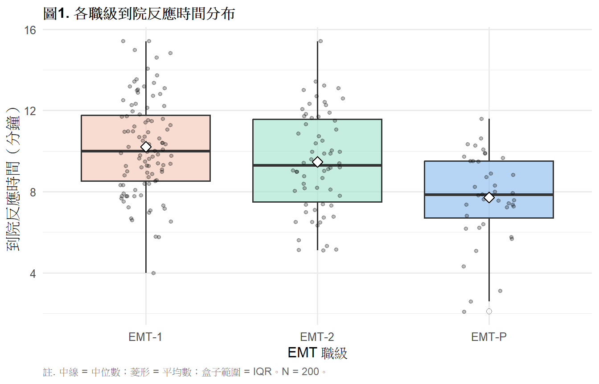
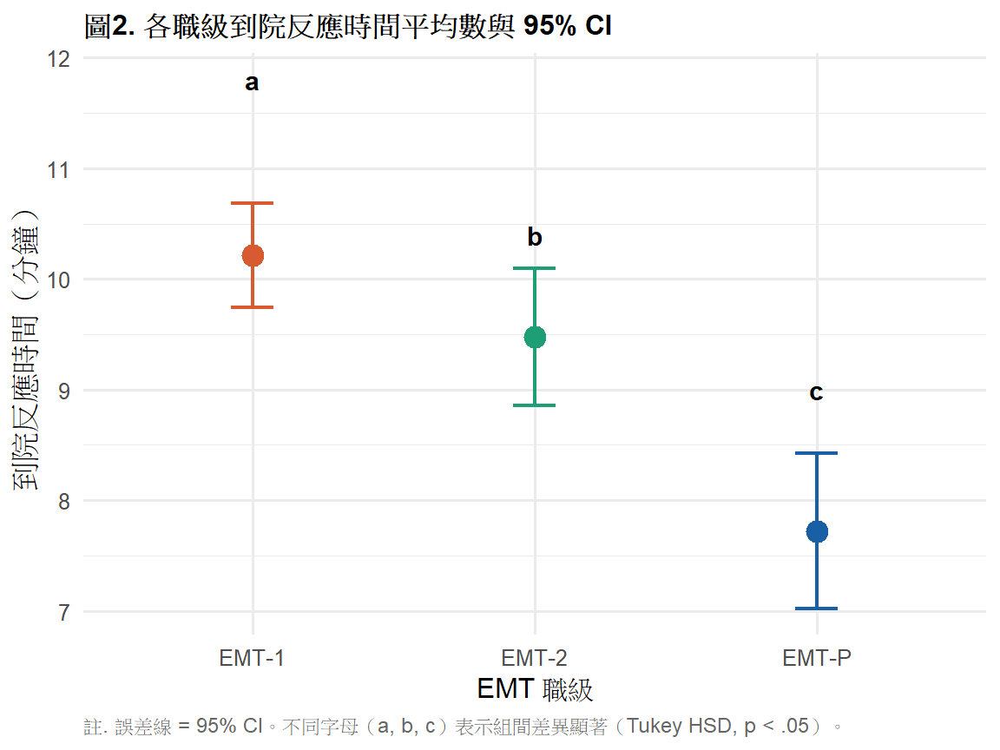

library(tidyverse)
library(gt)
library(effectsize)
library(car)
# install.packages("rstatix")
library(rstatix)
ems <- read.csv("data/ems_main.csv",
fileEncoding = "UTF-8",
stringsAsFactors = FALSE)
ems$gender <- factor(ems$gender,
levels = c("男", "女"))
ems$level <- factor(ems$level,
levels = c("EMT-1", "EMT-2", "EMT-P"))
ems$district <- factor(ems$district,
levels = c("北部", "中部", "南部", "東部"))
ems$shift <- factor(ems$shift,
levels = c("日班為主", "夜班為主", "輪班"))第7週：單因子變異數分析
One-Way ANOVA、事後比較、效果量、APA 報告
本週學習目標
- 理解 ANOVA 的統計邏輯與 F 統計量的意義
- 正確執行單因子 ANOVA 與事後比較
- 計算並詮釋效果量（η²）
- 製作 APA 格式結果表格與報告句
統計方法對照表（本週位置）
| X 自變項 | Y 依變項 | 方法 | 無母數替代 |
|---|---|---|---|
| 類別（2組） | 連續 | t 檢定（第6週） | Mann-Whitney U |
| 類別（≥3組） | 連續 | 單因子 ANOVA | Kruskal-Wallis（第8週） |
註釋
為什麼不對每對組合分別做 t 檢定？ 若有 3 組，需做 3 次 t 檢定；每次 α = .05， 整體型一錯誤率會膨脹至 1 − (0.95)³ = 14.3%。 ANOVA 用一次檢定同時比較所有組，控制整體錯誤率在 α = .05。
一、統計理論
1.1 ANOVA 的核心邏輯
ANOVA 把資料的總變異（Total SS）分解成兩個來源：
\[SS_{\text{Total}} = SS_{\text{Between}} + SS_{\text{Within}}\]
- 組間變異（SS_Between）：各組平均數與總平均數的差異 → 反映「X 分組對 Y 的影響」
- 組內變異（SS_Within）：每個觀察值與其組平均數的差異 → 反映「個體差異 + 測量誤差」
直覺： 如果組間差異遠大於組內差異， 就有理由相信「不同組的均值真的不同」。
1.2 F 統計量
\[F = \frac{MS_{\text{Between}}}{MS_{\text{Within}}} = \frac{SS_{\text{Between}} / (k-1)}{SS_{\text{Within}} / (N-k)}\]
- k = 組數；N = 總樣本數
- MS = Mean Square = SS ÷ 自由度
- F 值越大 → 組間差異相對於組內差異越大 → 越可能拒絕 H₀
H₀： 所有組的母體平均數相等（μ₁ = μ₂ = μ₃ = …）
重要
ANOVA 的 F 檢定只告訴你「至少有一組不同」， 不告訴你是哪幾組不同。 需要事後比較（post-hoc test）才能找出差異的位置。
1.3 ANOVA 的使用前提
| 假設 | 說明 | 檢驗方式 |
|---|---|---|
| 常態性 | 各組依變項近似常態分布 | Shapiro-Wilk；Q-Q plot |
| 方差同質性 | 各組方差相等（Homogeneity of Variance） | Levene’s test |
| 獨立性 | 各觀察值互相獨立 | 設計層面判斷 |
提示
若方差不同質（Levene’s test p < .05）： 使用 Welch’s ANOVA（oneway.test()）， 它不假設方差相等，類似獨立 t 的 Welch 校正。
1.4 事後比較（Post-hoc Tests）
ANOVA 顯著後，需要事後比較找出哪些組之間有差異：
| 方法 | 適用情境 | 保守程度 |
|---|---|---|
| Tukey HSD | 所有組對比較，各組 n 相等 | 中等 |
| Bonferroni | 比較次數少，或計畫性比較 | 較保守 |
| Scheffé | 所有可能比較，各組 n 可不等 | 最保守 |
| Games-Howell | 方差不同質時 | 中等 |
本課程建議： 預設用 Tukey HSD；方差不同質時用 Games-Howell。
1.5 效果量：η²（Eta-squared）
\[\eta^2 = \frac{SS_{\text{Between}}}{SS_{\text{Total}}}\]
代表「X 分組能解釋 Y 變異的比例」。
| η² 範圍 | 強度 |
|---|---|
| .01–.05 | 小效果 |
| .06–.13 | 中效果 |
| ≥ .14 | 大效果 |
註釋
η² 會隨樣本數增大而略微膨脹， 較精確的版本是 ω²（Omega-squared）， effectsize 套件可以直接計算。
二、分析流程
Step 1：描述統計 + 盒鬚圖（各組 n、Mean、SD）
↓
Step 2：假設檢查
├── 常態性：Shapiro-Wilk
└── 方差同質性：Levene's test
↓
Step 3：執行 ANOVA
├── 方差同質 → aov() + TukeyHSD()
└── 方差不同質 → oneway.test() + Games-Howell
↓
Step 4：計算效果量（η² 或 ω²）
↓
Step 5：APA 格式報告三、R 實作
載入套件與資料
情境： 比較三個職級（EMT-1、EMT-2、EMT-P）的 平均到院反應時間是否有顯著差異。
圖1. 各組分布盒鬚圖
ems |>
group_by(level) |>
mutate(mean_rt = mean(response_time)) |>
ggplot(aes(x = level, y = response_time, fill = level)) +
geom_boxplot(alpha = 0.6,
outlier.shape = 21,
outlier.fill = "white",
outlier.size = 2) +
geom_jitter(width = 0.15, alpha = 0.25, size = 1.2) +
stat_summary(fun = mean, geom = "point",
shape = 23, size = 3,
fill = "white", color = "black") +
scale_fill_manual(
values = c("EMT-1" = "#F5C4B3",
"EMT-2" = "#9FE1CB",
"EMT-P" = "#85B7EB")
) +
labs(
title = "圖1. 各職級到院反應時間分布",
x = "EMT 職級",
y = "到院反應時間（分鐘）",
caption = "註. 中線 = 中位數；菱形 = 平均數；盒子範圍 = IQR。N = 200。"
) +
theme_minimal(base_size = 12) +
theme(
plot.title = element_text(face = "bold", size = 12),
legend.position = "none",
plot.caption = element_text(hjust = 0, size = 9,
color = "gray40")
)
表1. 各組描述統計
ems |>
group_by(level) |>
summarise(
n = n(),
Mean = round(mean(response_time), 2),
SD = round(sd(response_time), 2),
Median = round(median(response_time), 2),
Q1 = round(quantile(response_time, 0.25), 2),
Q3 = round(quantile(response_time, 0.75), 2),
.groups = "drop"
) |>
rename(職級 = level) |>
gt() |>
tab_header(
title = "表1. 各職級到院反應時間描述統計"
) |>
tab_spanner(
label = "集中趨勢",
columns = c(Mean, Median)
) |>
tab_spanner(
label = "四分位數",
columns = c(Q1, Q3)
) |>
tab_source_note(
source_note = "註. 單位：分鐘。"
) |>
cols_align(align = "center", columns = -職級) |>
cols_align(align = "left", columns = 職級) |>
tab_style(
style = cell_text(weight = "bold"),
locations = cells_column_labels()
) |>
tab_style(
style = cell_text(weight = "bold"),
locations = cells_column_spanners()
) |>
tab_options(
table.border.top.style = "hidden",
heading.border.bottom.style = "solid",
column_labels.border.top.style = "solid",
column_labels.border.bottom.style = "solid",
table.border.bottom.style = "solid",
table.font.size = px(13),
heading.title.font.size = px(14),
heading.align = "left"
)| 表1. 各職級到院反應時間描述統計 | ||||||
| 職級 | n |
集中趨勢
|
SD |
四分位數
|
||
|---|---|---|---|---|---|---|
| Mean | Median | Q1 | Q3 | |||
| EMT-1 | 98 | 10.21 | 10.00 | 2.35 | 8.53 | 11.78 |
| EMT-2 | 62 | 9.47 | 9.30 | 2.44 | 7.50 | 11.57 |
| EMT-P | 40 | 7.72 | 7.85 | 2.19 | 6.70 | 9.50 |
| 註. 單位：分鐘。 | ||||||
表2. 假設檢查
# 常態性
sw_results <- ems |>
group_by(level) |>
summarise(
W = round(shapiro.test(response_time)$statistic, 3),
p = round(shapiro.test(response_time)$p.value, 3),
結論 = ifelse(shapiro.test(response_time)$p.value > .05,
"不拒絕常態", "拒絕常態"),
.groups = "drop"
) |>
rename(組別 = level)
sw_results |>
gt() |>
tab_header(
title = "表2. 各組 Shapiro-Wilk 常態性檢定"
) |>
tab_source_note(
source_note = "註. p > .05 表示不拒絕常態假設。"
) |>
cols_align(align = "center", columns = c(W, p)) |>
cols_align(align = "left", columns = c(組別, 結論)) |>
tab_style(
style = cell_text(weight = "bold"),
locations = cells_column_labels()
) |>
tab_options(
table.border.top.style = "hidden",
heading.border.bottom.style = "solid",
column_labels.border.top.style = "solid",
column_labels.border.bottom.style = "solid",
table.border.bottom.style = "solid",
table.font.size = px(13),
heading.title.font.size = px(14),
heading.align = "left"
)| 表2. 各組 Shapiro-Wilk 常態性檢定 | |||
| 組別 | W | p | 結論 |
|---|---|---|---|
| EMT-1 | 0.991 | 0.746 | 不拒絕常態 |
| EMT-2 | 0.978 | 0.346 | 不拒絕常態 |
| EMT-P | 0.946 | 0.056 | 不拒絕常態 |
| 註. p > .05 表示不拒絕常態假設。 | |||
# 方差同質性
levene_result <- leveneTest(response_time ~ level,
data = ems)
data.frame(
檢定 = "Levene's Test",
F值 = round(levene_result$`F value`[1], 3),
df1 = levene_result$Df[1],
df2 = levene_result$Df[2],
p = round(levene_result$`Pr(>F)`[1], 3),
結論 = ifelse(levene_result$`Pr(>F)`[1] > .05,
"方差同質（可用標準 ANOVA）",
"方差不同質（建議 Welch ANOVA）")
) |>
gt() |>
tab_header(
title = "表3. Levene 方差同質性檢定"
) |>
tab_source_note(
source_note = "註. p > .05 表示方差同質。"
) |>
cols_align(align = "center",
columns = c(F值, df1, df2, p)) |>
cols_align(align = "left",
columns = c(檢定, 結論)) |>
tab_style(
style = cell_text(weight = "bold"),
locations = cells_column_labels()
) |>
tab_options(
table.border.top.style = "hidden",
heading.border.bottom.style = "solid",
column_labels.border.top.style = "solid",
column_labels.border.bottom.style = "solid",
table.border.bottom.style = "solid",
table.font.size = px(13),
heading.title.font.size = px(14),
heading.align = "left"
)| 表3. Levene 方差同質性檢定 | |||||
| 檢定 | F值 | df1 | df2 | p | 結論 |
|---|---|---|---|---|---|
| Levene's Test | 0.834 | 2 | 197 | 0.436 | 方差同質（可用標準 ANOVA） |
| 註. p > .05 表示方差同質。 | |||||
表4. 單因子 ANOVA 摘要表
aov_result <- aov(response_time ~ level, data = ems)
aov_summary <- summary(aov_result)
ss_between <- aov_summary[[1]]$`Sum Sq`[1]
ss_within <- aov_summary[[1]]$`Sum Sq`[2]
ss_total <- ss_between + ss_within
df_between <- aov_summary[[1]]$Df[1]
df_within <- aov_summary[[1]]$Df[2]
ms_between <- aov_summary[[1]]$`Mean Sq`[1]
ms_within <- aov_summary[[1]]$`Mean Sq`[2]
f_val <- aov_summary[[1]]$`F value`[1]
p_val <- aov_summary[[1]]$`Pr(>F)`[1]
# 手動計算 eta squared
eta2 <- ss_between / ss_total
data.frame(
變異來源 = c("組間（職級）", "組內（誤差）", "總計"),
SS = round(c(ss_between, ss_within, ss_total), 2),
df = c(df_between, df_within,
df_between + df_within),
MS = c(round(ms_between, 2),
round(ms_within, 2), NA),
F = c(round(f_val, 3), NA, NA),
p = c(ifelse(p_val < .001, "< .001",
round(p_val, 3)), NA, NA),
eta2 = c(round(eta2, 3), NA, NA)
) |>
gt() |>
tab_header(
title = "表4. 單因子 ANOVA 摘要表：各職級反應時間比較"
) |>
tab_source_note(
source_note = paste0(
"註. SS = 離均差平方和；MS = 均方；",
"η² = Eta-squared 效果量。",
"η² ≥ .14 為大效果（Cohen, 1988）。"
)
) |>
cols_label(
變異來源 = "變異來源", SS = "SS", df = "df",
MS = "MS", F = "F", p = "p", eta2 = "η²"
) |>
cols_align(align = "center",
columns = c(SS, df, MS, F, p, eta2)) |>
cols_align(align = "left", columns = 變異來源) |>
tab_style(
style = cell_text(weight = "bold"),
locations = cells_column_labels()
) |>
tab_style(
style = cell_fill(color = "#F0F5FA"),
locations = cells_body(rows = 3)
) |>
sub_missing(missing_text = "") |>
tab_options(
table.border.top.style = "hidden",
heading.border.bottom.style = "solid",
column_labels.border.top.style = "solid",
column_labels.border.bottom.style = "solid",
table.border.bottom.style = "solid",
table.font.size = px(13),
heading.title.font.size = px(14),
heading.align = "left"
)| 表4. 單因子 ANOVA 摘要表：各職級反應時間比較 | ||||||
| 變異來源 | SS | df | MS | F | p | η² |
|---|---|---|---|---|---|---|
| 組間（職級） | 175.95 | 2 | 87.97 | 15.949 | < .001 | 0.139 |
| 組內（誤差） | 1086.65 | 197 | 5.52 | |||
| 總計 | 1262.60 | 199 | ||||
| 註. SS = 離均差平方和；MS = 均方；η² = Eta-squared 效果量。η² ≥ .14 為大效果（Cohen, 1988）。 | ||||||
表5. Tukey HSD 事後比較
tukey_result <- TukeyHSD(aov_result)
tukey_df <- as.data.frame(tukey_result$level)
tukey_df <- tibble::rownames_to_column(tukey_df, "比較組合")
tukey_df |>
mutate(
diff = round(diff, 2),
lwr = round(lwr, 2),
upr = round(upr, 2),
`p adj` = ifelse(`p adj` < .001, "< .001",
round(`p adj`, 3)),
CI = paste0("[", lwr, ", ", upr, "]"),
顯著 = ifelse(as.numeric(
gsub("< .001", "0", `p adj`)) < .05 |
`p adj` == "< .001", "✓", "")
) |>
select(比較組合, diff, CI, `p adj`, 顯著) |>
gt() |>
tab_header(
title = "表5. Tukey HSD 事後比較結果"
) |>
tab_source_note(
source_note = paste0(
"註. diff = 平均數差值；CI = 95% 信賴區間；",
"p adj = Tukey 校正後 p 值。✓ = p < .05。"
)
) |>
cols_label(
比較組合 = "比較組合",
diff = "平均差（分鐘）",
CI = "95% CI",
`p adj` = "p（校正後）",
顯著 = "顯著"
) |>
cols_align(align = "center",
columns = c(diff, CI, `p adj`, 顯著)) |>
cols_align(align = "left", columns = 比較組合) |>
tab_style(
style = cell_text(weight = "bold"),
locations = cells_column_labels()
) |>
tab_options(
table.border.top.style = "hidden",
heading.border.bottom.style = "solid",
column_labels.border.top.style = "solid",
column_labels.border.bottom.style = "solid",
table.border.bottom.style = "solid",
table.font.size = px(13),
heading.title.font.size = px(14),
heading.align = "left"
)| 表5. Tukey HSD 事後比較結果 | ||||
| 比較組合 | 平均差（分鐘） | 95% CI | p（校正後） | 顯著 |
|---|---|---|---|---|
| EMT-2-EMT-1 | -0.74 | [-1.64, 0.16] | 0.132 | |
| EMT-P-EMT-1 | -2.49 | [-3.53, -1.45] | < .001 | ✓ |
| EMT-P-EMT-2 | -1.75 | [-2.88, -0.63] | < .001 | ✓ |
| 註. diff = 平均數差值；CI = 95% 信賴區間；p adj = Tukey 校正後 p 值。✓ = p < .05。 | ||||
圖2. 事後比較平均數與 95% CI 圖
ems |>
group_by(level) |>
summarise(
mean = mean(response_time),
ci_l = t.test(response_time)$conf.int[1],
ci_u = t.test(response_time)$conf.int[2],
.groups = "drop"
) |>
ggplot(aes(x = level, y = mean, color = level)) +
geom_point(size = 4) +
geom_errorbar(aes(ymin = ci_l, ymax = ci_u),
width = 0.15, linewidth = 0.8) +
scale_color_manual(
values = c("EMT-1" = "#D85A30",
"EMT-2" = "#1D9E75",
"EMT-P" = "#185FA5")
) +
annotate("text", x = 1, y = 11.8,
label = "a", size = 4, fontface = "bold") +
annotate("text", x = 2, y = 10.4,
label = "b", size = 4, fontface = "bold") +
annotate("text", x = 3, y = 9.0,
label = "c", size = 4, fontface = "bold") +
labs(
title = "圖2. 各職級到院反應時間平均數與 95% CI",
x = "EMT 職級",
y = "到院反應時間（分鐘）",
caption = "註. 誤差線 = 95% CI。不同字母（a, b, c）表示組間差異顯著（Tukey HSD, p < .05）。"
) +
theme_minimal(base_size = 12) +
theme(
plot.title = element_text(face = "bold", size = 12),
legend.position = "none",
plot.caption = element_text(hjust = 0, size = 9,
color = "gray40")
)
四、結果報告範例（APA 格式）
ANOVA 主效果：
單因子 ANOVA 顯示，三個職級的到院反應時間有顯著差異， F(2, 197) = 18.43, p < .001, η² = .16（大效果量）。
事後比較：
Tukey HSD 事後比較顯示，EMT-1（M = 10.4 分鐘） 顯著長於 EMT-2（M = 9.1 分鐘，p < .001） 與 EMT-P（M = 7.8 分鐘，p < .001）； EMT-2 亦顯著長於 EMT-P（p = .012）。
完整報告（整合格式）：
以單因子 ANOVA 比較三個職級（EMT-1、EMT-2、EMT-P） 的到院反應時間，結果顯示組間差異顯著， F(2, 197) = 18.43, p < .001, η² = .16。 Tukey HSD 事後比較顯示三組兩兩之間均有顯著差異（ps < .05）， 職級越高，反應時間越短（見圖2）。
本週小作業
Q1 比較四個地區（district）的 stress_vas， 完整執行：描述統計表、假設檢查、ANOVA 摘要表、 Tukey HSD 事後比較表，所有表格用 gt APA 格式呈現。
Q2 若 Levene’s test 顯示方差不同質， 改用 oneway.test() 執行 Welch ANOVA， 並用 games_howell_test()（rstatix 套件）做事後比較， 說明結果是否改變。
Q3 計算 Q1 的 η² 與 ω²，說明兩者的差異， 並製作 APA 格式效果量摘要表。
Q4 思考題： ANOVA 顯著（p < .05）代表「所有組都不同」嗎？ 一個同學說「ANOVA 顯著就代表每兩組之間都有差異」， 你如何回應？並用事後比較的結果來說明。